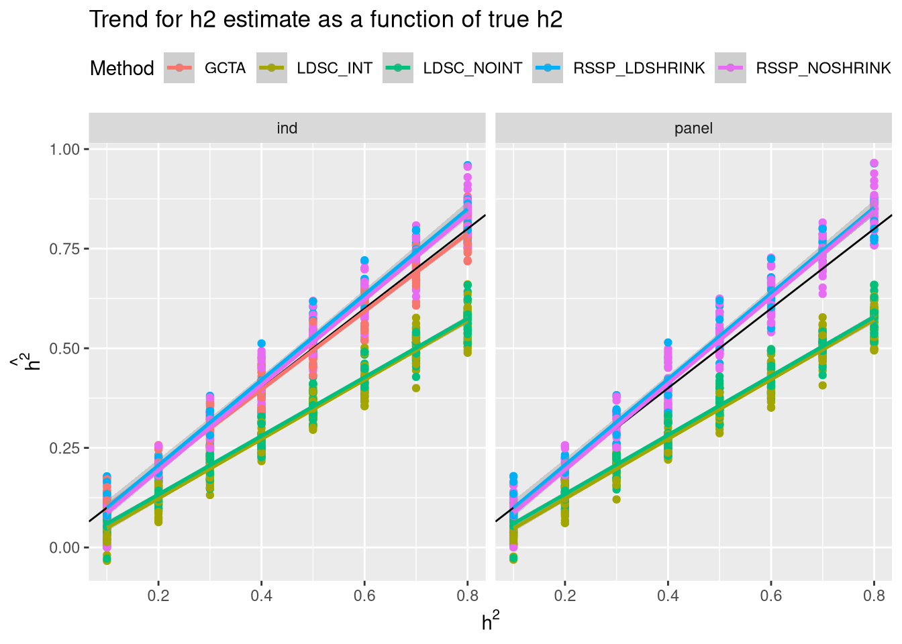
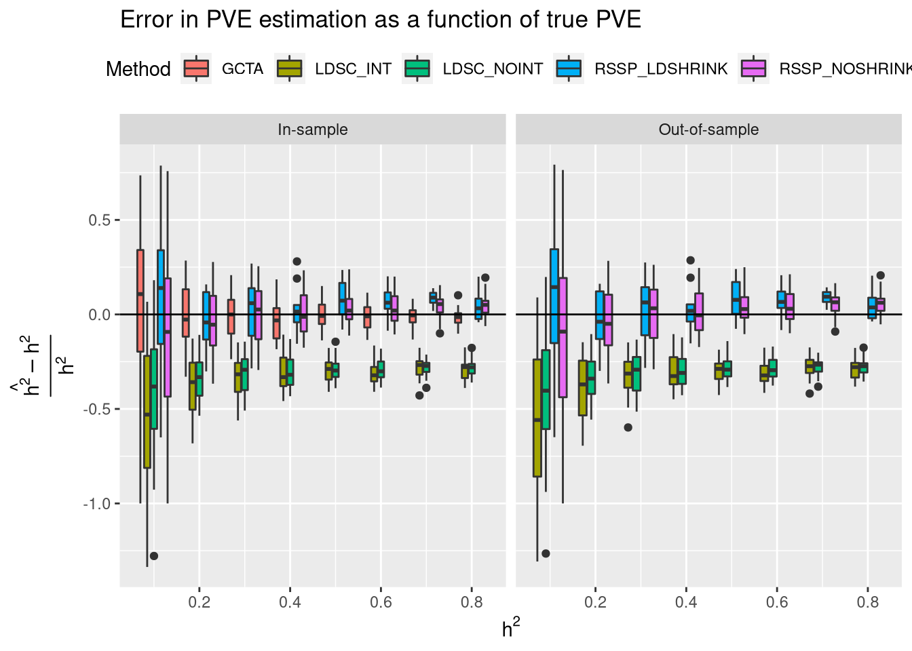
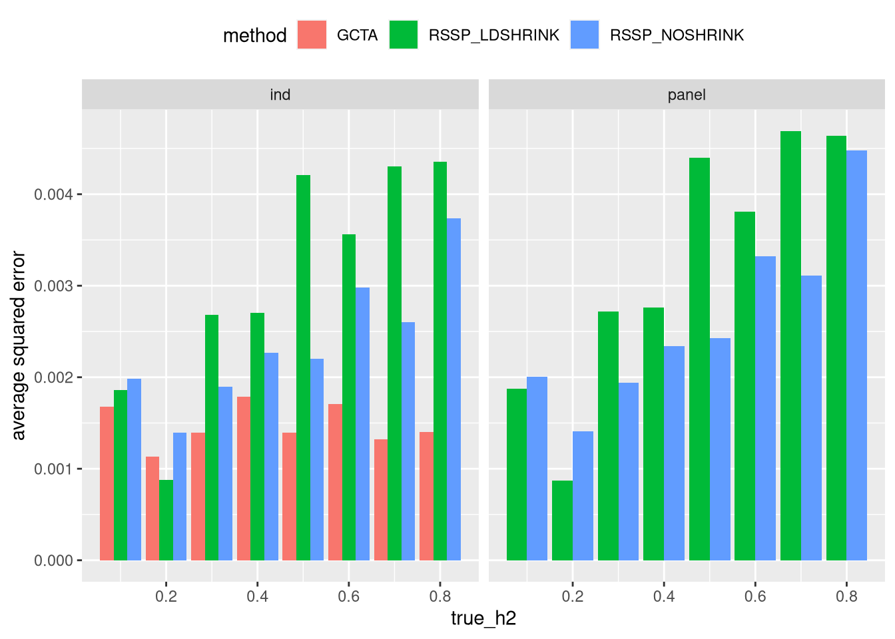
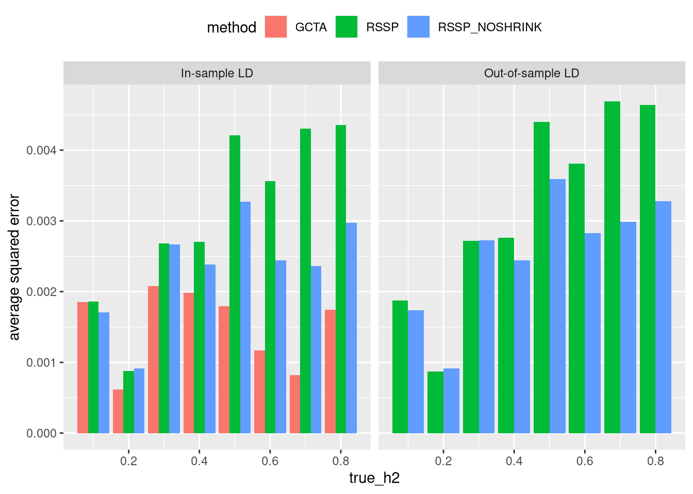

UK Biobank simulations
Nicholas Knoblauch
2020-04-15
Last updated: 2020-11-06
Checks: 4 3
Knit directory: PolygenicRSS/analysis/
This reproducible R Markdown analysis was created with workflowr (version 1.6.2). The Checks tab describes the reproducibility checks that were applied when the results were created. The Past versions tab lists the development history.
The R Markdown file has unstaged changes. To know which version of the R Markdown file created these results, you’ll want to first commit it to the Git repo. If you’re still working on the analysis, you can ignore this warning. When you’re finished, you can run wflow_publish to commit the R Markdown file and build the HTML.
The global environment had objects present when the code in the R Markdown file was run. These objects can affect the analysis in your R Markdown file in unknown ways. For reproduciblity it’s best to always run the code in an empty environment. Use wflow_publish or wflow_build to ensure that the code is always run in an empty environment.
The following objects were defined in the global environment when these results were created:
| Name | Class | Size |
|---|---|---|
| lsos | function | 1.5 Kb |
The command set.seed(12345) was run prior to running the code in the R Markdown file. Setting a seed ensures that any results that rely on randomness, e.g. subsampling or permutations, are reproducible.
Great job! Recording the operating system, R version, and package versions is critical for reproducibility.
Nice! There were no cached chunks for this analysis, so you can be confident that you successfully produced the results during this run.
Using absolute paths to the files within your workflowr project makes it difficult for you and others to run your code on a different machine. Change the absolute path(s) below to the suggested relative path(s) to make your code more reproducible.
| absolute | relative |
|---|---|
| /home/nwknoblauch/Dropbox/PolygenicRSS/workflow/results/ | ../workflow/results |
| /home/nwknoblauch/Dropbox/PolygenicRSS/workflow/results/sim_ukb_{ind}/polym_{rep}10{true_h2}_10000.{ext} | ../workflow/results/sim_ukb_{ind}/polym_{rep}10{true_h2}_10000.{ext} |
Great! You are using Git for version control. Tracking code development and connecting the code version to the results is critical for reproducibility.
The results in this page were generated with repository version 8f911ac. See the Past versions tab to see a history of the changes made to the R Markdown and HTML files.
Note that you need to be careful to ensure that all relevant files for the analysis have been committed to Git prior to generating the results (you can use wflow_publish or wflow_git_commit). workflowr only checks the R Markdown file, but you know if there are other scripts or data files that it depends on. Below is the status of the Git repository when the results were generated:
Ignored files:
Ignored: .RData
Ignored: .Rhistory
Ignored: .Rproj.user/
Ignored: .httr-oauth
Ignored: analysis/.Rhistory
Ignored: analysis/ChunkingLD.nb.html
Ignored: analysis/Exp_Heritability.nb.html
Ignored: analysis/Normalization.nb.html
Ignored: analysis/Optimization.nb.html
Ignored: analysis/PolygenicEstimation_cache/
Ignored: analysis/SharedSNPAnalysis (dell-desktop's conflicted copy 2018-09-04).nb.html
Ignored: analysis/SharedSNPAnalysis.nb (dell-desktop's conflicted copy 2018-09-04).html
Ignored: analysis/SharedSNPAnalysis.nb.html
Ignored: analysis/eQTL_Pipelines.nb.html
Ignored: analysis/importFramExp.nb.html
Ignored: analysis/ldshrink_test.nb.html
Ignored: code/.Rhistory
Ignored: code/scripts/.Rhistory
Ignored: code/snakemake_files/.RData
Ignored: code/snakemake_files/.Rhistory
Ignored: code/snakemake_files/.snakemake/
Ignored: code/snakemake_files/eqtl_check.RDS
Ignored: code/snakemake_files/ldsc_est_gwas_genome/
Ignored: code/snakemake_files/parameter_generation/
Ignored: code/snakemake_files/subset_data_pipeline/
Ignored: code/snakemake_files/temp_map_19.RDS
Ignored: code/snakemake_files/temp_target_19.RDS
Ignored: code/workflow_params.json~
Ignored: data/rep_polygenic/
Ignored: org/.Rhistory
Untracked files:
Untracked: _workflowr.yml
Untracked: code/.directory
Untracked: code/.ipynb_checkpoints/
Untracked: code/LD_raster.png
Untracked: code/RSSp_abstract.org
Untracked: code/RSSp_abstract_notes.org
Untracked: code/RSSp_talk_notes.org
Untracked: code/RSSp_talk_notes.pdf
Untracked: code/RSSp_talk_notes.tex
Untracked: code/Untitled.ipynb
Untracked: code/Untitled1.ipynb
Untracked: code/cpu\scores
Untracked: code/dl_1kg.org
Untracked: code/ideas.org
Untracked: code/ltximg/
Untracked: code/params/
Untracked: code/quhdypi/
Untracked: code/rssp.yml
Untracked: code/scikit_allel.org
Untracked: code/scripts/#break_df.R#
Untracked: code/scripts/#evd_1kg_h5.R#
Untracked: code/scripts/#map_uh_covar.R#
Untracked: code/scripts/RSSp_ldsc_results.Rmd
Untracked: code/scripts/bin/
Untracked: code/scripts/ldsc_rssp.Rmd
Untracked: code/scripts/matlab2h5.py
Untracked: code/scripts/vcf-liftover.sh
Untracked: code/scripts/vcf2allel.py
Untracked: code/skl_vf.ipynb
Untracked: code/snakemake_files/#trait_snakefile#
Untracked: code/snakemake_files/EUR.samples
Untracked: code/snakemake_files/UKBB_mf.csv
Untracked: code/snakemake_files/config.yaml
Untracked: code/snakemake_files/environment_rssp.yml
Untracked: code/snakemake_files/envs/ldsc.yml
Untracked: code/snakemake_files/ldi.RData
Untracked: code/snakemake_files/ldsc/
Untracked: code/snakemake_files/rssp_ldsc_report/
Untracked: code/snakemake_files/sim.RData
Untracked: code/snakemake_files/sum.RData
Untracked: code/snakemake_files/vert.txt
Untracked: code/t_scripts/
Untracked: code/test_py.py
Untracked: data/GREML_h2.xlsx
Untracked: data/LDSC_UKB_SumStatManifest.tsv
Untracked: data/NCBI34_to_GRCh38.chain.gz
Untracked: data/SNP_ws.RData
Untracked: data/Snakemake_inputs/
Untracked: data/all_df.RDS
Untracked: data/direct_sim_1kg.RDS
Untracked: data/journal.pgen.1006711.s002.xlsx
Untracked: data/journal.pgen.1006711.s003.xlsx
Untracked: data/ldsc_h2.txt.gz
Untracked: data/ntr_results.RData
Untracked: data/temp_ws.RData
Untracked: data/ukb31063_h2_all.02Oct2019.tsv.gz
Untracked: dosage.scan.RData
Untracked: dosage.snp.RData
Untracked: foobar.csv
Untracked: output/FRAM/
Untracked: output/RSSp_snakemake/
Untracked: output/bd/
Untracked: output/enrichment_NA_K.png
Untracked: output/enrichment_kidney.png
Untracked: output/pve/
Untracked: output/rssp_ldsc_oos.png
Untracked: output/rssp_res/
Untracked: scripts/
Untracked: storms.csv
Untracked: workflow/
Unstaged changes:
Modified: PolygenicRSS.Rproj
Modified: analysis/ukb_sim.Rmd
Modified: code/TF_LDshrink.ipynb
Modified: code/dask_LDshrink.ipynb
Modified: code/scripts/evd_1kg_h5.R
Modified: code/scripts/summarise_gcta.R
Modified: code/scripts/ukb_dl.R
Modified: code/snakemake_files/LD_snakefile
Modified: code/snakemake_files/Snakefile
Modified: code/snakemake_files/converters_snakefile
Modified: code/snakemake_files/grm_snakefile
Modified: code/snakemake_files/param_snakefile
Modified: code/snakemake_files/ukb_snakefile
Note that any generated files, e.g. HTML, png, CSS, etc., are not included in this status report because it is ok for generated content to have uncommitted changes.
These are the previous versions of the repository in which changes were made to the R Markdown (analysis/ukb_sim.Rmd) and HTML (docs/ukb_sim.html) files. If you’ve configured a remote Git repository (see ?wflow_git_remote), click on the hyperlinks in the table below to view the files as they were in that past version.
| File | Version | Author | Date | Message |
|---|---|---|---|---|
| Rmd | 8f911ac | CreRecombinase | 2020-11-06 | update with great ukb results |
| html | 8f911ac | CreRecombinase | 2020-11-06 | update with great ukb results |
| html | ff96c01 | CreRecombinase | 2020-04-22 | Build site. |
| Rmd | 66c90fe | CreRecombinase | 2020-04-22 | wflow_publish(“ukb_sim.Rmd”) |
| html | 50e8bc6 | CreRecombinase | 2020-04-15 | Build site. |
| Rmd | f5c7796 | CreRecombinase | 2020-04-15 | workflowr::wflow_publish(“analysis/ukb_sim.Rmd”) |
| html | 9ebd5aa | CreRecombinase | 2020-04-15 | Build site. |
| Rmd | f1b7365 | CreRecombinase | 2020-04-15 | workflowr::wflow_publish(“analysis/ukb_sim.Rmd”) |
Simulation
Samples
First, I randomly selected 12,000 samples from the UK biobank. I computed a GRM from these 12000, and created a list of 11309 unrelated individuals (GRM cutoff 0.05). I then sampled without replacement to obtain 10000 individuals for my GWAS simulation. I repeated the process to obtain 10000 individuals for a reference LD panel.
Causal Variants/Simulating Phenotype
I used the method simu to simulate polygenic traits from the~8 million variants that were above 1 percent allele frequency in both the GWAS and reference LD set. RSSp does not accomodate missing data, so
simu uses the GCTA-style additive genetic model:
\[y_j = \sum_i(w_{i,j}u_i) + e_j\] where \(w_{i,j} = (x_{i,j} - 2p_i) / \sqrt{2p_i(1 - p_i)}\), (which is undefined for \(p_i=0\) and \(p_i=1\)). \(e_j\) is the residual effect generated from a normal distribution with a mean of 0 and variance of \(\text{Var}(\sum_i(w_{i,j}u_i))(1 / h^2 - 1)\).
I simulated traits with 8 heritabilities of 0.1 to 0.8 in increments of 0.1. For each heritability value I simulated 10 phenotypes. For each phenotype, a different vector of true effects was generated
GWAS
I used the GCTA’s fastGWA to fit the gwas, and used 10 principle components (also obtained from plink2) as covariates.
LD
For both the GWAS samples and the reference LD samples I used LDshrink to estimate LD on variants within LDetect blocks. I used the 1kg GBR recombination rate estimated using the recently developed pyrho method. I also estimated LD within LDetect blocks without using the shrinkage estimator.
GCTA
I estimated individual-level heritability using GCTA’s single-component GREML, using 10 PCs as continuous covariates.
LDSC
I estimated LD scores from the 10000 samples using ldsc.py. Note that ldsc.py uses a sliding window based on genetic map and not LDshrink or LDetect. I used the pyrho recombination rate estimates here as well. I then estimated heritability (with and without an intercept) using those LD scores and the summary statistics.
RSSp
I ran RSSp on the gwas summary stats using either the 10000 GWAS samples (in-sample LD) or used the 10000 held-out,reference panel individuals.

Here’s the same result with per-method trends and individual estimates. 
Overall RSSp outperforms LDSC across a broad range of heritability levels, and performs comparably to in-sample methods for heritability estimation. LDshrink does not seem to consistently or significantly improve performance. Most importantly perhaps, it appears that the issue of inflated PVE estimates as the true PVE increases has gone away. On the contrary, it appears that LDSC (with or without an intercept) is “deflated”: the method seems tounderstimate heritability for higher heritability traits in a predictable fashion.

filter(results_df,str_detect(method,"RSSP")) %>%
ggplot(aes(x=true_h2,y=(h2-true_h2)^2,group=interaction(method,true_h2),fill=method))+geom_boxplot()+facet_wrap(~ind)+ggtitle("Error in PVE estimation as a function of true PVE")+geom_hline(yintercept = 0)+theme(legend.position = "top")
If we just look at the two RSSp (with and without LDshrink), It looks like RSSp without LDshrink does a little better, but not much. What’s more striking is how close the in-sample and out-of-sample LD results are.
filter(results_df,str_detect(method,"RSSP")) %>%
group_by(method,true_h2,ind) %>%
summarise(error=mean((h2-true_h2)^2),error_sd=sd((h2-true_h2^2))) %>% ggplot(aes(x=true_h2,y=error,group=interaction(true_h2,ind),fill=ind))+geom_col(position = "dodge")+ylab("average squared error")+facet_wrap(~method)+theme(legend.position = "top")
filter(results_df,str_detect(method,"RSSP")) %>%
group_by(method,ind) %>%
summarise(error=mean((h2-true_h2)^2),error_sd=sd((h2-true_h2^2))) # A tibble: 4 x 4
# Groups: method [2]
method ind error error_sd
<chr> <chr> <dbl> <dbl>
1 RSSP In-sample LD 0.00307 0.0772
2 RSSP Out-of-sample LD 0.00322 0.0778
3 RSSP_NOSHRINK In-sample LD 0.00234 0.0734
4 RSSP_NOSHRINK Out-of-sample LD 0.00256 0.0749
sessionInfo()R version 4.0.3 (2020-10-10)
Platform: x86_64-pc-linux-gnu (64-bit)
Running under: Manjaro Linux
Matrix products: default
BLAS/LAPACK: /usr/lib/libopenblas_haswellp-r0.3.11.so
locale:
[1] LC_CTYPE=en_US.UTF-8 LC_NUMERIC=C
[3] LC_TIME=en_US.UTF-8 LC_COLLATE=en_US.UTF-8
[5] LC_MONETARY=en_US.UTF-8 LC_MESSAGES=en_US.UTF-8
[7] LC_PAPER=en_US.UTF-8 LC_NAME=C
[9] LC_ADDRESS=C LC_TELEPHONE=C
[11] LC_MEASUREMENT=en_US.UTF-8 LC_IDENTIFICATION=C
attached base packages:
[1] stats graphics grDevices utils datasets methods base
other attached packages:
[1] firatheme_0.2.2 EigenH5_2.0.7 ldmap_1.5.2 vroom_1.3.2
[5] magrittr_1.5 unglue_0.1.0 fs_1.5.0 forcats_0.5.0
[9] stringr_1.4.0 dplyr_1.0.2 purrr_0.3.4 readr_1.4.0
[13] tidyr_1.1.2 tibble_3.0.4 tidyverse_1.3.0 plotly_4.9.2.1
[17] ggplot2_3.3.2
loaded via a namespace (and not attached):
[1] nlme_3.1-149 lubridate_1.7.9 bit64_4.0.5 httr_1.4.2
[5] rprojroot_1.3-2 tools_4.0.3 backports_1.1.10 utf8_1.1.4
[9] R6_2.5.0 DBI_1.1.0 lazyeval_0.2.2 mgcv_1.8-33
[13] colorspace_1.4-1 withr_2.3.0 tidyselect_1.1.0 bit_4.0.4
[17] compiler_4.0.3 git2r_0.27.1 extrafontdb_1.0 cli_2.1.0
[21] rvest_0.3.6 xml2_1.3.2 labeling_0.4.2 scales_1.1.1
[25] digest_0.6.27 rmarkdown_2.5 pkgconfig_2.0.3 htmltools_0.5.0
[29] extrafont_0.17 dbplyr_1.4.4 highr_0.8 htmlwidgets_1.5.2
[33] rlang_0.4.8 readxl_1.3.1 rstudioapi_0.11 farver_2.0.3
[37] generics_0.0.2 jsonlite_1.7.1 Matrix_1.2-18 Rcpp_1.0.5
[41] munsell_0.5.0 fansi_0.4.1 lifecycle_0.2.0 stringi_1.5.3
[45] whisker_0.4 yaml_2.2.1 grid_4.0.3 blob_1.2.1
[49] promises_1.1.1 crayon_1.3.4 lattice_0.20-41 haven_2.3.1
[53] splines_4.0.3 hms_0.5.3 knitr_1.30 pillar_1.4.6
[57] reprex_0.3.0 glue_1.4.2 evaluate_0.14 data.table_1.13.2
[61] RcppParallel_5.0.2 modelr_0.1.8 vctrs_0.3.4 httpuv_1.5.4
[65] Rttf2pt1_1.3.8 cellranger_1.1.0 gtable_0.3.0 assertthat_0.2.1
[69] xfun_0.18 broom_0.7.2 later_1.1.0.1 viridisLite_0.3.0
[73] workflowr_1.6.2 ellipsis_0.3.1